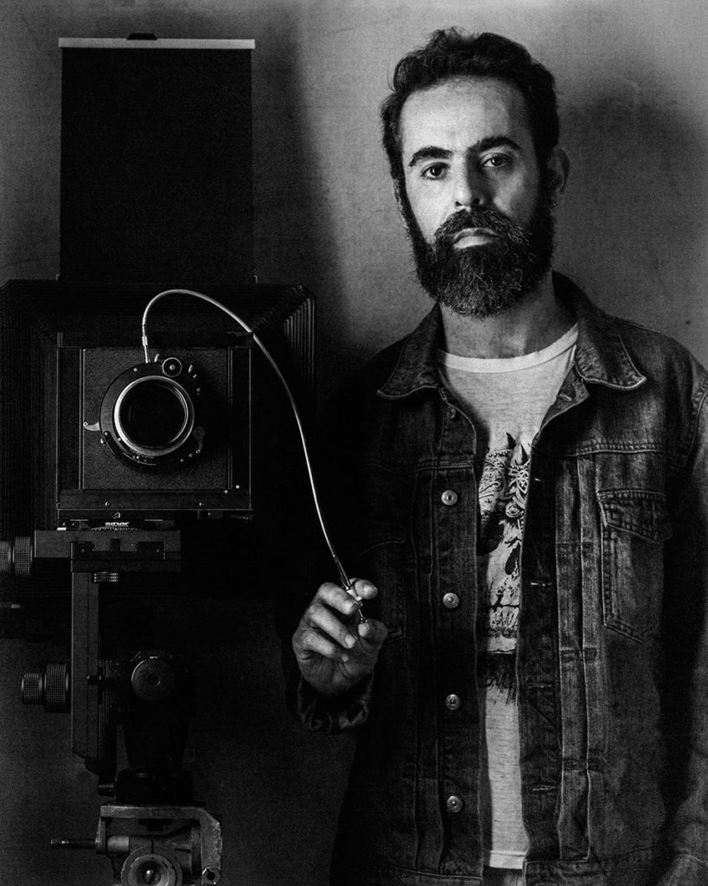

Daniel Malva
Sobre

Daniel Malva é artista visual e pesquisador, natural de Ribeirão Preto, nascido em 1977. Vive e trabalha em São Paulo desde 2001.
Sua prática é atravessada pela catalogação. Desde o início dos anos 2000, Malva constrói sistemas de registro que articulam imagem, linguagem, arquivo e observação. Fotografia, desenho, pintura, escrita e pesquisa participam de seu trabalho como instrumentos complementares de documentação.
Inicialmente, explorou a fotografia como linguagem principal. Sua produção passou a abranger processos artísticos, linguísticos e tecnológicos, incluindo a construção de lentes artesanais e modificações em equipamentos fotográficos. Animais taxidermizados, órgãos humanos, dentes, radiografias, alfabetos e sistemas linguísticos aparecem em séries distintas, reunidos pela investigação sobre classificação, memória, mortalidade e tempo.
Entre 2009 e 2014, desenvolveu a série Museu de História Natural, realizada com lente artesanal e software de câmera modificado. A série foi exibida no Brasil, em Londres, Oslo e Suíça, e integra o capítulo “Taxidermy and Natural History Dioramas” do livro Decolonial Ecologies: The Reinvention of Natural History in Latin American Art, de Joanna Page.
Em 2014, Desambiguação reorganizou constelações e estrelas por meio de ovos de codorna e dentes humanos. Em OJardim, órgãos humanos dissecados e fetos foram fotografados com câmeras de grande formato. Multis reuniu 450 imagens de crânios humanos em polípticos. As séries seguintes, Spoiled Smile, Pan-nomĭnālis e Quem Sou Eu Se Não Você Em Mim, expandiram a pesquisa em torno de impermanência, nomeação, identidade e transformação técnica da imagem.
Em 2019, Malva concluiu o mestrado em Artes pelo Instituto de Artes da UNESP. Em 2024, o diagnóstico de autismo produziu uma reinterpretação significativa de sua trajetória artística e intelectual. Sua pesquisa passou a examinar o autismo como episteme e forma situada de produção de conhecimento.
Em 2025, ingressou no doutorado em Artes no Programa de Pós-Graduação do Instituto de Artes da UNESP, sob orientação do Prof. Dr. Fernando Luiz Fogliano. Sua pesquisa atual, Autismo como Episteme: Duas Autoetnografias de um Mundo Interno, articula autoetnografia, teoria do monotropismo, epistemologia feminista e estudos da neurodiversidade.
Exposições
Individuais
- Efemérides, Vão - Espaço Independente de Arte, São Paulo, Brasil
- Imaginal, Museu de Saúde Pública Emílio Ribas, São Paulo, Brasil
- OJardim, Galeria Mezanino, São Paulo, Brasil
- A medida do tempo das coisas, Solar da Marquesa de Santos, São Paulo, Brasil
- Gabinete de curiosidades, Kristin Hjellegjerde Gallery, Londres, Reino Unido
- Gabinete de curiosidades, Shoot Gallery, Oslo, Noruega
- Organometrismo, Jardim Botanical Rio de Janeiro, Rio de Janeiro, Brasil
- Natural History Museum, Galeria Espaço Ophicina, São Paulo, Brasil
- Natural History Museum, Galeria Mezanino, São Paulo, Brasil
Coletivas
- Representações da Cidade de São Paulo, Museu da Cidade - Prefeitura de São Paulo, São Paulo, Brasil
- A verdade está no Corpo, Paço das Artes, São Paulo, Brasil
- Era de Atari, Lona Galeria, São Paulo, Brasil
- Aifa, Universidade de Luxemburgo, Luxemburgo
- Arca de Noé/A Bicharada, Porão da Belizario, São Paulo, Brasil
- A quem pertence a paisagem, PUC-SP, São Paulo, Brasil
- Volta 13 Art Fair, Markthalle, Basel, Suíça
- Raros, Vintages & Inéditos, Virgílio Gallery, São Paulo, Brasil
- Tristes Trópicos, Galeria Mezanino, São Paulo, Brasil
- Pequenos formatos, Galeria Mezanino, São Paulo, Brasil
- Movimenta#1, Galeria Mezanino, São Paulo, Brasil
- Lavoro 19, Galeria Espaço Ophicina, São Paulo, Brasil
- There and Back, IPF, Lisboa e Porto, Portugal
- Paysage, L’oiel Gallery, São Paulo, Brasil
- 00 Generation: A Nova Fotografia Brasileira, SESC Belenzinho, São Paulo, Brasil
- Natures, Galeria Mezanino, São Paulo, Brasil
- Anti, Cartel 011, São Paulo, Brasil
- Life seems to a party, Galeria Mezanino, São Paulo, Brasil
- Landscapes e Skylines, Trace and Pixel, Galeria Mezanino, São Paulo, Brasil
- Backyard, Galeria Mezanino, São Paulo, Brasil